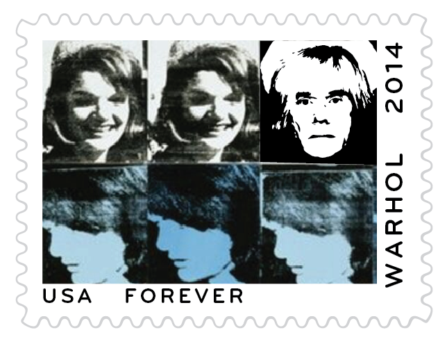
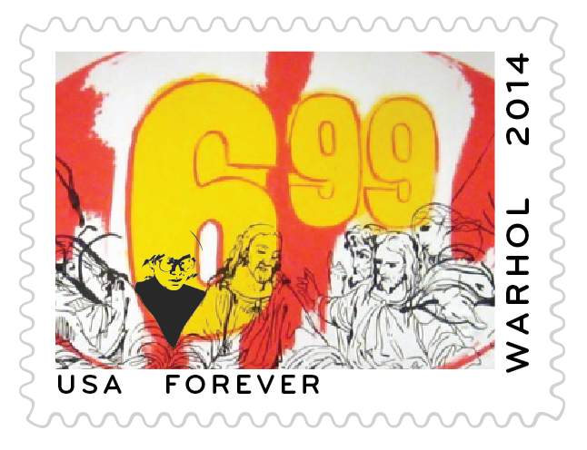

Andy Warhol Stamps
I created stamps that expose the duality of Andy Warhol. He came from a poor background and reached elite status. He was an apolitical admirer of political figures, and he was a pop icon despite his Catholic faith.

The Stamps
In creating the individual stamps, I wanted to incorporate Warhol's original work with portraits of himself in order to visually communicate my concept. You can see the duality of his social/financial standing, his political/apolitical interests, and his religious/pop culture dual identity.
 